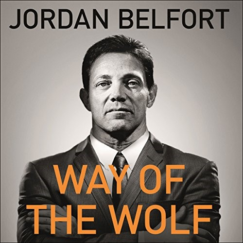
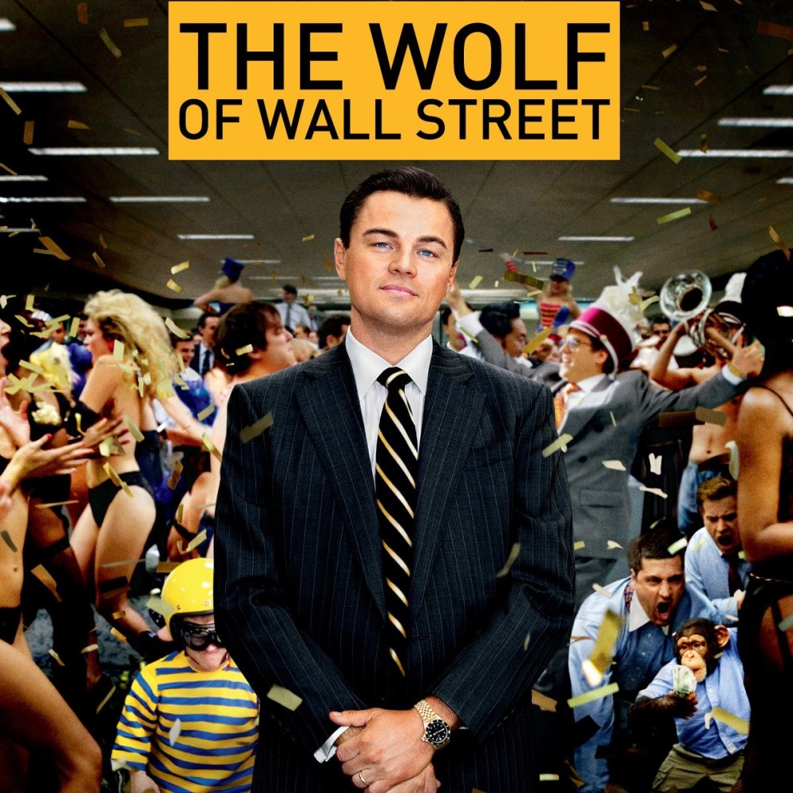

The Wolf of Wall Street
Released December 2013
Actors:
- Leonardo DiCaprio, Jonah Hill, Margot Robbie
- Matthew McConaughey, Kyle Chandler, Rob Reiner
- Jon Favreau, Jean Dujardin, Aya Cash
The Wolf of Wall Street is a 2013 American biographical black comedy crime film directed by Martin Scorsese and written by Terence Winter, based on the 2007 memoir of the same name by Jordan Belfort. It recounts Belfort's perspective on his career as a stockbroker in New York City and how his firm, Stratton Oakmont, engaged in rampant corruption and fraud on Wall Street, which ultimately led to his downfall.


Soundtrack
- Mercy, Mercy
- Dust My Broom
- Bang! Bang!
- "C'est si bon
- Goldfinger
- Pretty Thing
Soundtrack
- Moonlight Vermont
- Double Dutch
- "Never Say Never
- Road Runner
- Mrs. Robinson
- Leonardo DiCaprio won his second Golden Globe for his performance in the film. He eartned his first Golden Globe from the film The Aviator
- The Wolf of Wall Street uses animals including a chimpanzee, a lion, a snake, a fish, and dogs. The four-year-old chimpanzee Chance spent time with actor Leonardo DiCaprio and learned to roller skate over the course of three weeks. In 2007, Leonardo DiCaprio and Warner Bros. won a bidding war for the rights to Jordan Belfort's memoir The Wolf of Wall Street, with Belfort making $1 million off the deal.
- Martin Scorsese, director
- The Wolf of Wall Street grossed $116.9 million in North America and $275.1 million internationally, for a total gross of $392 million.